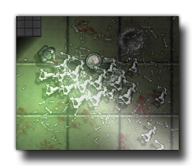

Tutorial
Page 1 of 10
Surfaces
Surfaces are one of the most powerful of all graphical tools that you have available to you when you are creating games with GameMaker:Studio. But, as with most things that empower you in some
way, they are also quite tricky to use and can be problematic if not understood properly. This advanced tutorial aims to explain how to get the most out of surfaces in your games, while also teaching you the
best way to use them while avoiding (or resolving) any potential problems that they may cause.
This tutorial starts with a very basic, and quite boring looking, area shooter game, which we are going to add to and convert into something far more interesting to look at. You can also find a finished version
of this tutorial example by going to the Help menu and selecting Open GameMaker in Explorer. From here you can then browse to the Tutorials folder and the one containing this
tutorial will have a file marked Surface_Tutorial_FINISHED*gmz which you can import into GameMaker:Studio at any time to see how the tutorial you are doing should look.

Play the tutorial game a bit to get an idea of what it's like before we change anything (the controls are arrow keys to move, mouse to point, left mouse button to shoot and right mouse button to throw a
grenade). It is worth noting that this tutorial only scratches the surface (sic) of how to use surfaces in your games, and with a bit of imagination and some careful programming you can use them to
make some quite spectacular effects! So, take your time to complete this tutorial and don't forget to revise the manual as well as it contains valuable information on the individual functions that we will be
using in this tutorial.
NOTE: This tutorial requires a good working knowledge of the GameMaker Language (GML), although you can also use it to learn a lot about basic functions since all code in the examples
is fully commented and explained.
Click on the Next button to go to the next page of the tutorial.